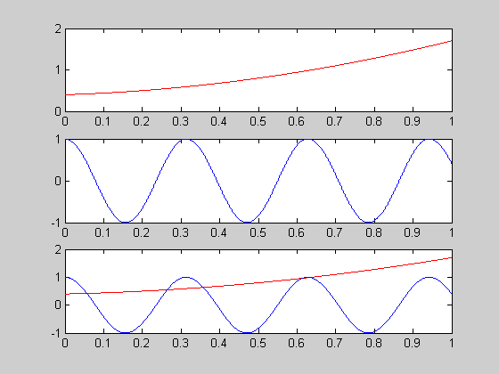
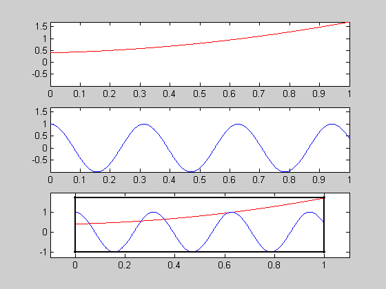

ZoomBox Example
Zoom box creates a resizable, movable box in a parent axes that controls the axis limits in the children axes.
Overview
Demo Explaination: Clean up and then load in some data
Switch the argument in the if statement to get different data. Change the value of N to generate large data sets. Different modes of ZoomBox should be used based on the size of the data set.
clear; clc; close all if 0 load handel Ns = 2^12; Y = fft(y,Ns); df = Fs/Ns; x = (0:1:Ns/2-1)*df; y1 = 2/Ns*abs(Y(1:Ns/2)); y2 = sqrt(y1); else N = 9000; x = linspace(0,1,N); y1 = polyval([1 0.3 0.4],x); y2 = cos(20*x); end
Demo Explaination: Create the Axes, save the handles and plot the data.
Each of the axes should be populated with data, normally the parent axes has all of the data from the children axes, but this is not a requirement. ZoomBox only cares about the axes limits, not the data that is shown.
hChildAxes(1) = subplot(3,1,1); plot (x,y1,'r-'); %figure %uncomment to try putting the axes on different figures. hChildAxes(2) = subplot(3,1,2); plot (x,y2,'b-'); %figure %uncomment to try putting the axes on different figures. hParentAxes = subplot(3,1,3); n = 1; %Change n to change th amount of decimation that occurs in parent axes. plot (x(1:n:end),y1(1:n:end),'r-',x(1:n:end),y2(1:n:end),'b-')
Demo Explaination: Call ZoomBox
Change the third argument to try different update modes. See help for different modes.
zoomBox(hParentAxes, hChildAxes,0)